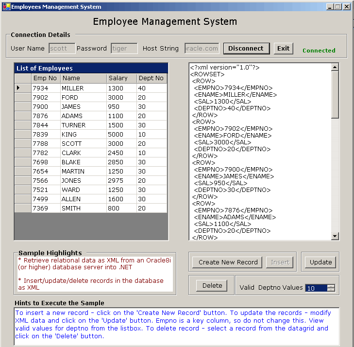
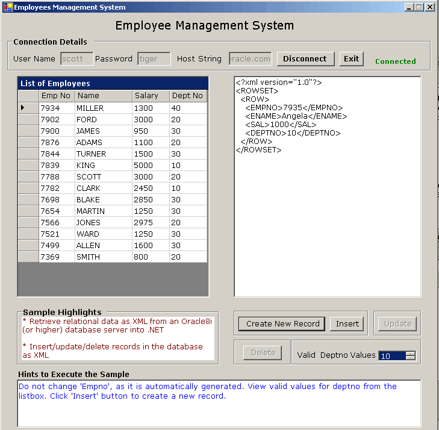

Accessing/Manipulating Relational Data using XML - Employee Management SystemTable of Contents
The purpose of this sample application is to demonstrate the following: 1) Retrieval of relational data from an Oracle database as XML through Oracle Data Provider for .NET (ODP.NET) 2) Insertion/Update/Deletion of relational data in an Oracle database using XML as input through ODP.NET
With Oracle database version 8.1.7 and later, it is possible to convert data from relational tables into XML. Data in the form of XML can be used for insertion, update and deletion back to relational data in the database. ODP.NET 9.2.0.4 and higher provides this XML support to query and manipulate the relational data using XML. The relational data queried as XML can then be exchanged seamlessly with the Microsoft .NET framework. An XML document can be used to insert, update or delete relational data in the Oracle database with ODP.NET. ODP.NET 9.2.0.4 provides enhancements to This sample, an Employee Management System, is a windows
application using Visual Basic .NET. It uses the
On establishing a successful connection
to an Oracle database, the employee data from the
When this sample is run, the user should first enter the
appropriate connection details and click the 'Connect' button to connect to the
Oracle database. After the database connection is established successfully, the
list of employees from the 
To insert a new record into the 
To save the new record click on the 'Insert' button. The new data is reflected in the DataGrid and the XML document. To update the existing records, the user can make changes to the XML document displayed in the text area. Refer to the 'Hints to Execute the Sample' section for more details. The user can click on the 'Update' button to update data in the database. The update is then reflected in the Datagrid and the XML document. The user can also update individual records by clicking on a record in the datagrid. The corresponding XML of the selected record is displayed in the textbox. The user can modify the XML and click on the 'Update' button to update the record in the database. To delete record(s), the user can select a record from the datagrid and click on the 'Delete' button. The changed data, with all records is reflected in the datagrid and the XML document. Users can also delete all these records in a batch by using the 'Delete' button.
Unzip
No special database setup is required to run this sample. This
sample uses
1. Ensure completion of the Database setup. 2. Open 3. Ensure that
the following .NET Component References have been added to To add the above .NET Components 5. Build and run the sample
by pressing
1. When running this sample, enter the connection details and
provide the username and password for the user that has the required 2. After providing the connection details, click on the 'Connect' button. In case the connection could not be established successfully, the connection status is displayed as 'Not Connected' in red color. On successful connection, the connection status is displayed as 'Connected' in green color, the DataGrid and textArea are populated with employee data and the UI controls are enabled. 3. To update the existing 4. To insert a new record, the user can click on the 'Create
New Record' button. On clicking this button, the text area displays a sample
XML record. The user can edit this new record. Do not change 'empno' as it is a
key column that is generated automatically by the application as a unique
value. The user can view the list of valid 'deptno' from the list. Refer to the
hints given. After editing the sample record, the user can click on the
'Insert' button to save the data in the database. On successful insertion of
the 5. To delete a record, the user can click on the row in the datagrid that is to be deleted. The corresponding XML of that row appears in the textbox. The user can then click 'Delete' button. A meesage dialog appears with Yes/No option. On selecting 'Yes' the record(s) gets deleted and a confirmation message is displayed. On selecting 'No', no delete happens. 6. To change the connection, the user can click on the 'Disconnect' button and connect to the other database by providing relevant connection details. 7. To exit the application, click on the 'Exit' button.
Following is the directory structure of the
|